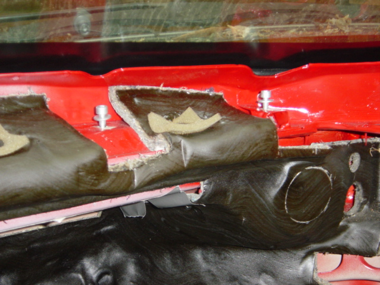
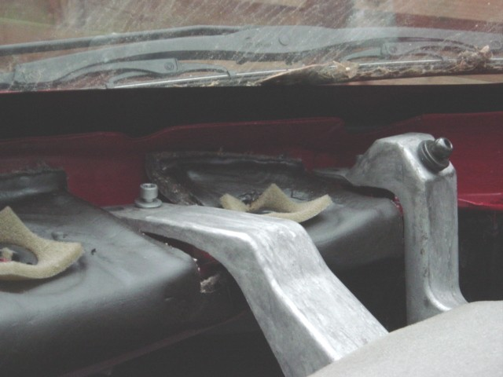
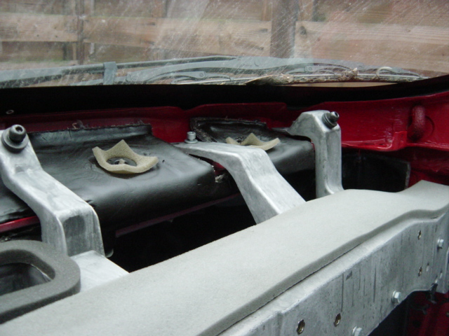
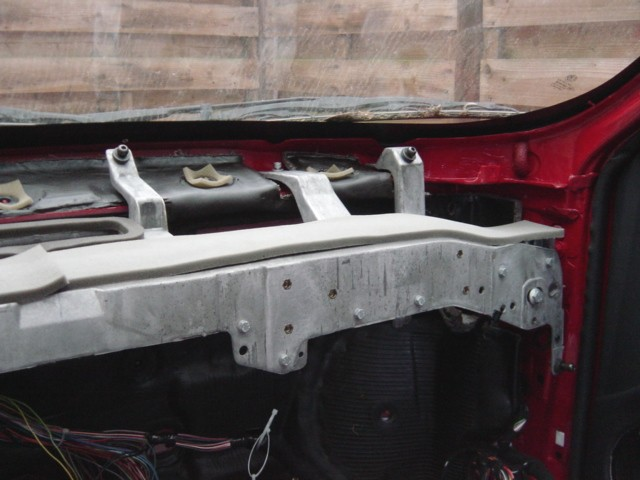
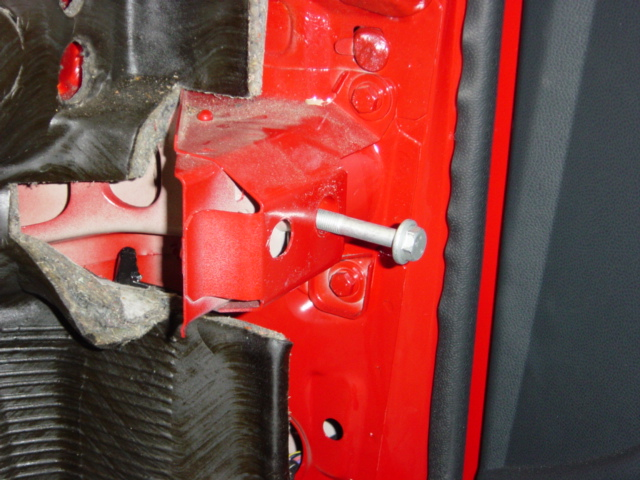
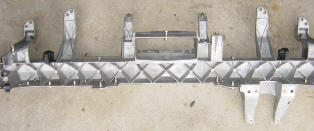
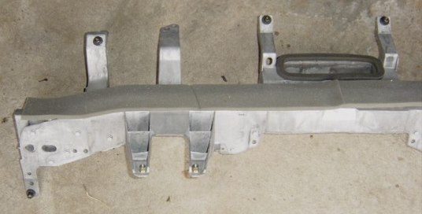

The dashboard in Alfa 156 does not rattle _that_ much. But there are some known rattles.
When the weather gets colder and down to 0C they appear. My (webmaster) dashboard squeaks
a little bit when driving over small bumps in the road. But the squeaking dissapears after
10 minutes of driving when the car gets warmer inside.
There is also one more much more annoying noise that might appear in cold weather. The noise
comes from the passenger side of the dashboard. It sounds kind of when someone is freezing
and clicks their teeth together - klick-klick-klick-klick etc
This is the captive nuts on the front dash mounts. They need to be packed out to stop the
noise. This noise will also dissapear after some minutes of driving. The remedy is to squirt
silicone sealant around the nut or modify the captive nuts with rubber washers (as per bulletin).
Option a) involves stripping the dash down to access the nuts, reassmbley leaves open many
opportunities for error, and introduction of new noises - it also takes about 4 hours.
Option b) requires a windscreen fitter to remove the glass, you squirt your silicone and
he refits screen, takes you 10 minutes, and about 80ukp for the screen job. You could even
try and tie it in with a replacement screen if yours is damaged.
Option c) is probarbly the most easy one as it only requires to remove the ait vent that
runs almost full width in the far end of the dash. More info about this below.
First a little more information:

The concerned bolts image (view) from the right front side. Watch the savings in the top
lock plate to reach the bolts (without window).

A view from the same area, but with the beam assembled. The outmost bolt to the right,
almost impossible to reach. (Hardly impossible to see).

Wider image from the same point taken.: The dashboard is assembled with thick black imbus
bolts.

More beam farhest to the right in the highed of the doorstyle a thick black bolt that
is rattling to.

The concerned bolt in the support beam in Detail.

A image from the underside carrybeam to show that it's impossible that something can slide
through. It is one big piece of Magnesium, you can lift it up with only one finger. Right
below the stut's that fit's the steeringwheel column with more bolts. In the steering wheel
column on the picture are hairline cracks! I already maild to Alfa about that, but never
get any responce at it. AUch Alfa....

You can see the right side of the carrybeam with steeringcolumn stut's. In the middle an
opening for the front windshield ( window) ventilation.
I can't judge if it is possible to reach the little bolts if you disassembled the front
windshield (window). If the dashboard is not fitted in you can reach the bolts very
easy. But if it is the only remedy to disassemble the front windshield (window), it's way
easier to do that instead of disassemble the dashboard! You can also disassemble the
discondencegrill. Then you can reach some of the bolts. This is tightened with a click
system in the dashboard, you have to pull it VERY carefull upwards , start with the ends.
WATCH OUT for damage at the dashboard(!!), scratches and that the grill don't breaks into
two pieces. I hope i made this a bit clear for you all how this dashboard works, i hope
you will learn something from it . :)
There are also stories that this sound can be fixed by mounting a strout brace. This might
be something to consider and by this reason you might even talk your missus into letting
you buy one. ;)
The captive nuts noise are roumored to have been fixed from factory in 2001 and
later models.
BIG thanks to the Dutch Alfa 156 club and Kid van Orsouw for the pictures and example here
in this article! It is available in Dutch on their page. Also big thanks to Danny (AR 155 2.0TS)
who transelated that text to me so I was able to understand it! Also thanks to Andy Hewitt
for some of the other info! (from alt.autos.alfa-romeo)